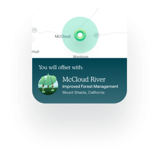
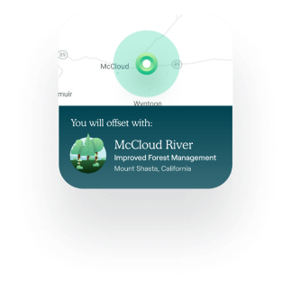

Matching the Offset
The Cloverly API can find and match the best offset per transaction. If your customer orders a product in California,
for example, we might partner with an improved forest management project in California to keep the benefit local.
Transaction Transparency
We believe in transparency and fully validated transactions. That's why every time you (or your customers) choose to
offset an emission-producing activity with Cloverly, we provide real-time transactional data to show the location,
type, and amount of carbon offset.
Verified Sources
To effectively neutralize carbon emissions, we know that quality matters. That's why Cloverly works with reputable,
internationally recognized suppliers who track and verify registered carbon offset projects.

 
